%%writefile requirements.txt
duckduckgo-search==2.8.6
fastai==2.7.12
fastdownload==0.0.7
fastcore==1.5.29Overwriting requirements.txt
This post takes inspiration from the book Computer Vision on AWS. Chapter 3 of the book dives into Amazon Rekognition and covers many more details than this post. The book used Packt logos as an example for Rekognition Custom Labels. However, I have used the Raspberry Pi logo instead to make it more interesting. To download the Raspberry Pi images from the internet, I have relied on FastAI and Duckduckgo_search libraries.
Amazon Rekognition Custom Labels is a fully managed computer vision service that allows developers to build custom models to classify and identify objects in images that are specific and unique to your business. Rekognition Custom Labels doesn’t require you to have any prior computer vision expertise. For example, you can find your logo in social media posts, identify your products on store shelves, classify machine parts in an assembly line, distinguish healthy and infected plants, or detect animated characters in videos.
Developing a custom model to analyze images is a significant undertaking that requires time, expertise, and resources, often taking months to complete. Additionally, it often requires thousands or tens of thousands of hand-labeled images to provide the model with enough data to accurately make decisions. Generating this data can take months to gather and requires large teams of labelers to prepare it for use in machine learning (ML).
Rekognition Custom Labels builds off of the existing capabilities of Amazon Rekognition, which are already trained on tens of millions of images across many categories. Instead of thousands of images, you simply need to upload a small set of training images (typically a few hundred images or less) that are specific to your use case using the Amazon Rekognition console. If the images are already labeled, you can begin training a model in just a few clicks. If not, you can label them directly on the Rekognition Custom Labels console, or use Amazon SageMaker Ground Truth to label them. Rekognition Custom Labels uses transfer learning and AutoML to automatically inspect the training data, select the right model framework and algorithm, optimize the hyperparameters, and train the model. When you’re satisfied with the model accuracy, you can start hosting the trained model with just one click.
This introduction is adapted from AWS Machine Learning Blog post Announcing the launch of the model copy feature for Amazon Rekognition Custom Labels
In this post, I have explained how to create a custom object detection model using the Reckognition custom labels service. Our goal will be to create a model that can analyze images and locate the Raspberry Pi logo on its boards.

This notebook is created with Amazon SageMaker Studio envionment. Details of the environment are given below

We need to collect relevant images to successfully train a model that can detect Raspberry Pi logos on computer boards. We can use the Google Images search to find such images. But downloading many pictures from Google search can take much work to automate. So instead, we can use a different search engine, DuckDuckGo.com, that provides a more straightforward interface duckduckgo_search for search. For downloading and resizing images, we will use additional libraries from the FastAI ecosystem fastai and fastdownload.
%%writefile requirements.txt
duckduckgo-search==2.8.6
fastai==2.7.12
fastdownload==0.0.7
fastcore==1.5.29Overwriting requirements.txt%%capture
!pip install -r requirements.txt
# Install required libraries
# 1. `duckduckgo_search` to search for words, documents, images, news, maps and text translation using the DuckDuckGo.com search engine.
# 2. `fastdownload` to easily download, verify, and extract archives
# 3. `fastai` to open, visualize, and transform images
# 4. `fastcore` extends Python list functionalityfrom duckduckgo_search import ddg_images
from fastcore.all import *
# Define a function to search for images using DuckDuckGo.com search engine for the provided term. It returns the URL of the searched image.
# By default, it will try to find 200 images matching the searched word.
def search_images(term, max_images=200):
print(f"Searching for '{term}'")
return L(ddg_images(term, max_results=max_images)).itemgot("image")
# Define search term. In our case it is "raspberry pi board"
searches = {
"pi": "raspberry pi board",
}
# Test the search function and display URLs returned
urls = search_images(searches["pi"], max_images=1)
urls[0]Searching for 'raspberry pi board''https://www.watelectronics.com/wp-content/uploads/2019/07/Model-A-Raspberry-Pi-Board.jpg'Above, we have defined a function that can be used to search images and return their URLs. Next, we can use these URLs to download and save images to a local directory.
from fastai.vision.all import *
from fastdownload import download_url
# `local_path_raw` is the local directory to store raw downloaded images
local_path_raw = Path(f"{local_path}/raw/")
dest = f"{local_path_raw}/sample-image.jpg"
# Download a sample Raspberry Pi board image
download_url(urls[0], dest, show_progress=True)
# Display the downloaded image
im = Image.open(dest)
im.to_thumb(512, 512)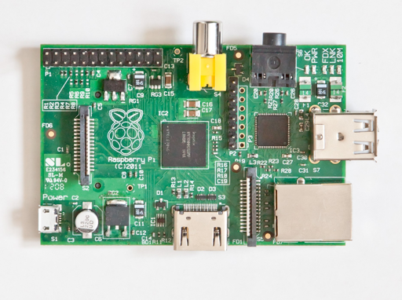
In the above image, you can see the Raspberry Pi logo in the center of the board. That is our target and we want our model to locate it automatically. This sample image shows that our search string is correct, and we can proceed to download similar images.
# Use each search string to search and download images
max_images = 200 # total number of images to search for
for key, value in searches.items():
# create a separate folder for each searched term
dest = local_path_raw / key
dest.mkdir(exist_ok=True, parents=True)
# download and store the images for provided searched term
download_images(dest, urls=search_images(value, max_images=max_images))
resize_images(local_path_raw / key, max_size=800, dest=local_path_raw / key)Searching for 'raspberry pi board'At this point, the search and download step is complete. Next, let’s count the number of images successfully downloaded to our local directory.
(#156) [Path('assets/2023-04-26-amazon-rekognition-custom-labels/raw/pi/e3a144d9-5730-4def-9581-c2cc6f26140a.jpg'),Path('assets/2023-04-26-amazon-rekognition-custom-labels/raw/pi/195d40ea-0a1c-4875-a7eb-6f06fc0855cd.jpg'),Path('assets/2023-04-26-amazon-rekognition-custom-labels/raw/pi/5d10c219-ae38-4cfe-b432-96f951e0bb3f.jpg'),Path('assets/2023-04-26-amazon-rekognition-custom-labels/raw/pi/2d0e1737-a72d-4513-bd74-432fae126891.png'),Path('assets/2023-04-26-amazon-rekognition-custom-labels/raw/pi/338f84b5-e583-4925-b3bb-aebc4bc18bd1.jpg'),Path('assets/2023-04-26-amazon-rekognition-custom-labels/raw/pi/c114204b-b97a-455b-bdcc-0e3ee835ad11.png'),Path('assets/2023-04-26-amazon-rekognition-custom-labels/raw/pi/f3a698c6-25b7-4c5f-b17b-95ade57afee0.jpg'),Path('assets/2023-04-26-amazon-rekognition-custom-labels/raw/pi/2c950136-cb8e-4809-ae0b-f115a00e2f2d.jpg'),Path('assets/2023-04-26-amazon-rekognition-custom-labels/raw/pi/5a574d21-5bbb-4214-b9c2-513e014bf348.jpg'),Path('assets/2023-04-26-amazon-rekognition-custom-labels/raw/pi/c3d979de-648c-4e98-8fe4-3e617e12ec32.jpg')...]We have downloaded the required images (#156 in total), but there is no guarantee that all our photos contain a Raspberry Pi logo. An image without a proper logo is useless for training. So we need to manually verify all the pictures and remove any that does not meet our requirements. This is a manual step and has to be performed very patiently. After cleaning all the images, I uploaded them under the /clean directory.
# After downloading the images, next step is to manually clean all the images
# After cleaning, check the count of images
local_path_clean = local_path / "clean"
local_path_clean.ls()(#112) [Path('assets/2023-04-26-amazon-rekognition-custom-labels/clean/d14e3413-0c2f-4a8d-9361-e842633a7fb6.jpg'),Path('assets/2023-04-26-amazon-rekognition-custom-labels/clean/1a623864-2b33-4bce-98e9-5cbc2551afae.jpg'),Path('assets/2023-04-26-amazon-rekognition-custom-labels/clean/228d560d-ab50-4bf5-8a3b-510dcdf89e9a.jpg'),Path('assets/2023-04-26-amazon-rekognition-custom-labels/clean/babf3bb6-fa72-4a53-989d-a34326422e19.jpg'),Path('assets/2023-04-26-amazon-rekognition-custom-labels/clean/95660e55-1566-47cb-912c-2c683b790dcd.jpg'),Path('assets/2023-04-26-amazon-rekognition-custom-labels/clean/9ee061b2-c492-4691-9557-4b848cd16f10.jpg'),Path('assets/2023-04-26-amazon-rekognition-custom-labels/clean/5e0490d6-646d-470e-8257-f3c6742c3a48.jpg'),Path('assets/2023-04-26-amazon-rekognition-custom-labels/clean/a3f1aaa0-3188-414a-b6b6-0e5ce308daf9.jpg'),Path('assets/2023-04-26-amazon-rekognition-custom-labels/clean/3ae6fd96-22fa-404c-a867-48ca3a181f05.jpg'),Path('assets/2023-04-26-amazon-rekognition-custom-labels/clean/51be4baa-f930-4816-9383-119e89bd0270.png')...]Let’s display a sample of the cleaned images.
# Define a function to display the extention of the image.
# Note that only JPG and PNG images can be used for training in Rekognition custom labels
def label_func(f):
return f[-3:].upper()
# Load images from the folder. This function act as a filter to omit files that are not images.
# It does not read images at this point and only return their paths.
files = get_image_files(local_path_clean)
# Use FastAI DataLoader class to read images from the provided paths
dls = ImageDataLoaders.from_name_func(
local_path_clean, files, label_func, item_tfms=Resize(224)
)
# Display a subset of images
dls.show_batch(max_n=15)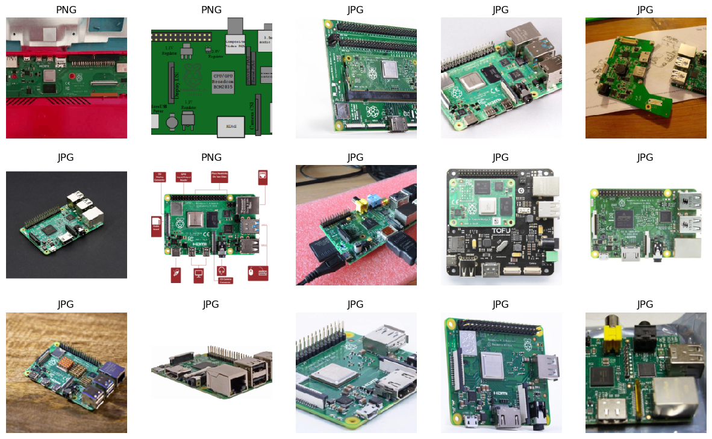
The next step is to upload our finalized training images to AWS S3 bucket. I have created a bucket with the name 2023-04-26-amazon-rekognition-custom-labels. You may use a unique name of your own choice to create an S3 bucket.
# Define S3 bucket name, bucket URL and images S3 path
s3_bucket_name = '2023-04-26-amazon-rekognition-custom-labels'
s3_bucket_url = f's3://{s3_bucket_name}'
s3_images_path = f'{s3_bucket_url}/images'
region = 'us-east-2'
print(
's3_bucket_url: ', s3_buket_url, '\n'
's3_images_path: ', s3_images_path
)s3_bucket_url: s3://2023-04-26-amazon-rekognition-custom-labels
s3_images_path: s3://2023-04-26-amazon-rekognition-custom-labels/images## Create an S3 bucket using AWS CLI MakeBucket (mb) command.
# https://awscli.amazonaws.com/v2/documentation/api/latest/reference/s3/mb.html
!aws s3 mb $s3_bucket_url --region $region
# !aws s3 mb s3://2023-04-26-amazon-rekognition-custom-labels --region us-east-2make_bucket failed: s3://2023-04-26-amazon-rekognition-custom-labels An error occurred (BucketAlreadyOwnedByYou) when calling the CreateBucket operation: Your previous request to create the named bucket succeeded and you already own it.2023-05-01 09:11:23 39999 images/029ae3b8-b647-43f2-92b0-36ecbc7ae551.jpg
2023-05-01 09:11:23 527439 images/034cb4ef-b7b1-48ab-8839-515878aefe72.png
2023-05-01 09:11:23 506785 images/050e16bf-ef67-4791-8b44-da1b7f903972.png
2023-05-01 09:11:23 50558 images/075d8ea9-ccd2-4cd7-b9b5-f499ff7d0f09.jpg
2023-05-01 09:11:23 73841 images/07b07c52-69ce-4eef-9887-d2b795913b33.jpeg
2023-05-01 09:11:23 66759 images/09caf2a1-3958-47f0-b2b8-61905a6337ef.jpg
2023-05-01 09:11:23 104966 images/09f566df-128b-428d-b514-a7cfe47bccca.jpg
2023-05-01 09:11:23 68640 images/0a3b17b6-a4d5-4252-9628-5b857fe9ce25.jpg
2023-05-01 09:11:23 64107 images/0dc491c7-f1c0-4d54-bf60-bf986ff4340a.jpg
2023-05-01 09:11:23 61480 images/0f1fcd8d-dbb1-4926-9d2a-55e18deed3ec.jpg
2023-05-01 09:11:23 91267 images/172ed24a-c58b-4186-bb66-c5bf48c125f8.png
2023-05-01 09:11:23 45327 images/1a623864-2b33-4bce-98e9-5cbc2551afae.jpg
2023-05-01 09:11:23 62962 images/1b8b90a9-b8cb-4c85-a3fb-cd9a865baa5d.jpg
2023-05-01 09:11:23 108271 images/20f1ec83-13c3-4517-b9e7-3d7cb8f1d4dd.jpg
2023-05-01 09:11:23 71131 images/21b40f53-63a7-47f7-984b-d413ad254781.jpg
2023-05-01 09:11:23 75492 images/21e48d81-57d7-4da5-9d95-a038d0c285c1.jpg
2023-05-01 09:11:23 52485 images/228d560d-ab50-4bf5-8a3b-510dcdf89e9a.jpg
2023-05-01 09:11:23 52315 images/23e65a8d-e3e2-4d8c-9aab-9f03c0f62868.jpg
2023-05-01 09:11:23 47489 images/267bd98b-4001-4610-8af8-ca60595029c0.jpg
2023-05-01 09:11:23 38170 images/2bbd80f8-9a0e-45a2-8f76-1f5f3f5f4095.jpg
2023-05-01 09:11:23 39310 images/2c96018d-5501-4226-ae2b-a4ed84a75243.jpg
2023-05-01 09:11:23 39218 images/3260abbe-f3f4-4acc-8a26-244a9bfe60da.jpeg
2023-05-01 09:11:23 48423 images/3714d169-4839-44fc-8664-04cefbfd5376.jpg
2023-05-01 09:11:23 323750 images/38092e95-5aa3-4a1e-80c8-b8bb39d269cd.png
2023-05-01 09:11:23 12804 images/38395e14-56ea-4bb0-980f-fc33a98221ce.jpg
2023-05-01 09:11:24 66244 images/39e4317c-0ee7-4d0e-95d7-cec439f4c7e5.jpg
2023-05-01 09:11:24 76993 images/3ae6fd96-22fa-404c-a867-48ca3a181f05.jpg
2023-05-01 09:11:24 68135 images/3fdf6f5a-bbe2-43bd-a0ff-b60c263cb360.jpg
2023-05-01 09:11:24 112907 images/41f7b9f1-f12f-47a1-9c0a-20566fb141f4.jpg
2023-05-01 09:11:24 56593 images/42a1cc88-09f0-449e-80f5-014c141c0bd7.jpg
2023-05-01 09:11:24 147903 images/46fd265c-45ba-4d0f-9a1e-3d7c1211f6ee.jpg
2023-05-01 09:11:24 72134 images/499518b6-37b9-4fe0-b3e9-86e5330ad45b.jpg
2023-05-01 09:11:24 53768 images/4b3221ee-4e26-4cf9-965a-0eadc0fa6228.jpg
2023-05-01 09:11:24 113101 images/4ca55c47-a818-4186-b730-eda0e866b81f.jpg
2023-05-01 09:11:24 81604 images/4fa1edaf-9194-4d60-8552-8c120e73e440.png
2023-05-01 09:11:24 327371 images/51be4baa-f930-4816-9383-119e89bd0270.png
2023-05-01 09:11:24 60700 images/575ed94f-7228-4b2b-8e22-6c1aa63ede18.jpg
2023-05-01 09:11:24 64617 images/5e0490d6-646d-470e-8257-f3c6742c3a48.jpg
2023-05-01 09:11:24 76236 images/5fbfce6f-1c46-4ee4-bba7-159558992d2f.jpg
2023-05-01 09:11:24 55074 images/618177b5-2ed9-4bd6-9580-8dcfd025865b.jpg
2023-05-01 09:11:24 39436 images/633d8365-40c3-4374-a216-6a7778d43f03.jpg
2023-05-01 09:11:24 49081 images/64119679-dab3-47c2-b7f5-4001a58700ec.jpg
2023-05-01 09:11:24 77339 images/65418732-0c4e-4f24-8d50-ec3151fa5d6a.jpg
2023-05-01 09:11:24 75945 images/672afbf2-de03-4bf5-aa57-d40b7d31d541.jpeg
2023-05-01 09:11:24 59209 images/68966e2e-bd6b-4d23-bf49-679713065f95.jpg
2023-05-01 09:11:24 48855 images/6da5aaae-1be1-4316-ae14-8de75789414a.jpg
2023-05-01 09:11:24 623433 images/7339b3ae-86d8-4181-8055-866fe5f22b0c.png
2023-05-01 09:11:24 366856 images/749fb305-cf38-4576-b749-1296408b6712.png
2023-05-01 09:11:24 226675 images/75f95913-8fe0-4c4a-80d1-44a73c29ae2d.jpg
2023-05-01 09:11:24 42959 images/78d8228e-e49b-47e1-a167-6cd559ab9a73.jpg
2023-05-01 09:11:24 72061 images/79d1f3fe-9470-41d1-b0b0-1e295f7d562b.jpg
2023-05-01 09:11:24 52261 images/7ac4b88d-d078-4772-b436-6fcb93f4055f.jpg
2023-05-01 09:11:24 96002 images/7e182025-7977-4f71-b1e8-f07788758598.jpg
2023-05-01 09:11:24 105369 images/825a4024-df99-42ac-9496-ea04d1b1c7bd.jpg
2023-05-01 09:11:24 93159 images/83204d18-cdf0-466f-ba71-a62be9244b8a.jpg
2023-05-01 09:11:24 93044 images/8627d03b-1dfa-436b-9178-d427d181fb7a.jpg
2023-05-01 09:11:24 133550 images/8630cdac-946f-4153-838b-56e687922e6c.png
2023-05-01 09:11:24 251448 images/8738fe36-29b7-4eb7-919c-d9c6afdf75a5.png
2023-05-01 09:11:24 20703 images/8880357a-d253-4048-9cdb-f096f233e00a.jpg
2023-05-01 09:11:24 394736 images/897f9b22-dbfe-46ad-adef-abc89f81e637.PNG
2023-05-01 09:11:24 45704 images/8a445c99-8f7b-4dcd-973c-173d7207a9eb.jpg
2023-05-01 09:11:24 65416 images/8fdad490-0d0e-4878-bf16-9804dec79874.jpg
2023-05-01 09:11:24 34553 images/8fee7840-b28d-41b3-83df-92273f550203.jpg
2023-05-01 09:11:24 52397 images/92c4d6d7-4927-4fd2-91bf-9b2aa2ef2882.jpg
2023-05-01 09:11:24 76263 images/95660e55-1566-47cb-912c-2c683b790dcd.jpg
2023-05-01 09:11:24 41339 images/958f88c2-49fa-4fc4-8cc0-1f7801494a5b.jpg
2023-05-01 09:11:24 96875 images/971c86ee-4956-470a-9464-40298017a4a0.jpg
2023-05-01 09:11:24 82668 images/990c3934-9530-4eef-98ea-06a09c2b6855.jpg
2023-05-01 09:11:24 74400 images/9968f3b0-c79e-4796-bf39-14ff13f2f7ad.jpg
2023-05-01 09:11:24 90824 images/9ca1913e-545b-4404-92ce-49da444a63c4.jpg
2023-05-01 09:11:24 76967 images/9ccd7dd1-0ca4-444f-bc1a-af9db96a51e5.jpg
2023-05-01 09:11:24 68486 images/9d3851ae-2f6c-453e-a023-a7bf513438c7.jpg
2023-05-01 09:11:24 67379 images/9ee061b2-c492-4691-9557-4b848cd16f10.jpg
2023-05-01 09:11:24 97003 images/9f77c47f-52af-4be9-acd2-28aeb8ec53e9.jpg
2023-05-01 09:11:24 69616 images/9fb73562-02a1-4c1e-9c02-a6189674db9e.jpg
2023-05-01 09:11:24 35460 images/a0105005-96b7-41d5-8e3f-28bb45129fbe.jpg
2023-05-01 09:11:24 65774 images/a3f1aaa0-3188-414a-b6b6-0e5ce308daf9.jpg
2023-05-01 09:11:24 569945 images/a85aeaa4-244f-45fc-826b-5fb9b26235bf.png
2023-05-01 09:11:24 72757 images/a9588d35-98ed-417d-a620-01800e4ff831.jpg
2023-05-01 09:11:24 73227 images/af307494-b8ce-422f-9011-f3eeb0e15879.jpg
2023-05-01 09:11:24 36802 images/b3312eec-43a5-475c-b5b4-4722e1aa8fec.jpg
2023-05-01 09:11:24 47581 images/b620148b-86c5-4f18-abcd-548ec88fefe8.jpg
2023-05-01 09:11:24 36604 images/b6b220b5-bfe7-4647-acca-c0d8fa98e02d.png
2023-05-01 09:11:24 57179 images/b8af0031-fa79-4aa7-9405-cd9825624db3.jpg
2023-05-01 09:11:24 41915 images/ba4a4c20-a35f-4627-8d7a-6e4204cfe3e8.jpg
2023-05-01 09:11:24 44096 images/babf3bb6-fa72-4a53-989d-a34326422e19.jpg
2023-05-01 09:11:24 85721 images/be5c7e07-735b-46e6-a4d1-10b94d8b5092.jpg
2023-05-01 09:11:24 225141 images/bea1c670-4f1b-46be-939b-be1b6d0d79bc.jpg
2023-05-01 09:11:24 28111 images/c1ab05ea-9ec7-4d70-ba48-e59c899a54cd.jpg
2023-05-01 09:11:24 53330 images/c2615222-51f3-4799-a8f7-e1797c7ed1a5.jpg
2023-05-01 09:11:24 72484 images/c4b37d79-82f0-4455-a61c-d6d36b85efb3.jpg
2023-05-01 09:11:24 131996 images/c7c95ad8-407d-4fa1-85d4-d642c3f2f154.jpg
2023-05-01 09:11:24 82042 images/c959d9f2-392b-4e8d-bffe-60f1c73df2d4.jpg
2023-05-01 09:11:24 54427 images/c9f005fe-601d-436d-86de-3378a3f97d61.JPG
2023-05-01 09:11:24 70177 images/cc7111c1-cc40-4ad7-9e88-b8d3c8dbbbc2.jpg
2023-05-01 09:11:24 166650 images/cc8db196-e8a0-431d-9da8-8dabaa22ea24.png
2023-05-01 09:11:24 63822 images/d14e3413-0c2f-4a8d-9361-e842633a7fb6.jpg
2023-05-01 09:11:24 487367 images/d2c711fa-f922-413f-aadc-ae0e9e10af2f.png
2023-05-01 09:11:24 70247 images/d3f80782-ea64-40a6-89c0-0590cc16528e.jpg
2023-05-01 09:11:24 64264 images/e1091468-29c6-4d32-b0c9-2f08ec2bfa3c.jpg
2023-05-01 09:11:24 49633 images/e3e17e8e-3c59-4ebe-8516-1dd2aa79f38e.jpg
2023-05-01 09:11:24 98993 images/e4965e99-67b5-4681-8477-fce7cec39608.jpg
2023-05-01 09:11:24 176557 images/e50a84c0-0c05-4d00-a80d-f8727e682955.png
2023-05-01 09:11:24 46807 images/e52c99cf-6db7-44c8-9402-8ba0e1690e68.jpg
2023-05-01 09:11:24 51590 images/e71c9747-6dab-4c15-a7a5-b0667d14994c.jpg
2023-05-01 09:11:24 74435 images/e964abee-0aa3-4d74-95ef-7c4650be6e68.jpg
2023-05-01 09:11:24 68261 images/ed2da15b-bbf0-4d8d-8543-cffb293a6321.jpg
2023-05-01 09:11:24 103909 images/edeaf6bf-59ea-4132-a6f7-ce6011c2cba6.jpg
2023-05-01 09:11:24 48948 images/f4552f5f-3d4f-4e27-9430-52a4c0d82b6c.jpg
2023-05-01 09:11:24 67209 images/fa5d6d7d-156e-4971-87d2-eb0f3ea2baa2.jpg
2023-05-01 09:11:24 70342 images/fb5b1519-2f9e-4e65-a2f7-2d66a0f5cd61.jpgTo work with Rekognition Custom Labels, we first have to create a project. A Project is like a logical workspace where you place and organize your project assets like datasets and models.
To create a Project go to Amazon Rekognition Custom Labels > Projects > Create Project
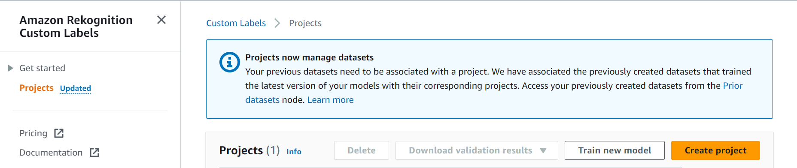
Under Project details give it’s Project name as raspberry-pi-logos, and click Create project.
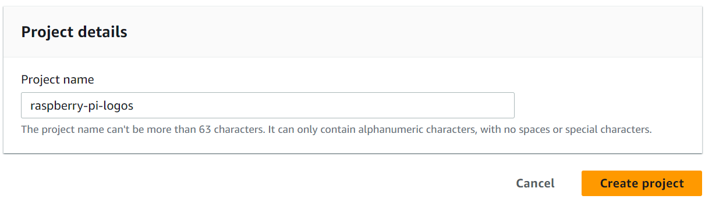
Next we will create a dataset under the project. This dataset will hold our training and test images. For this go to Custom Labels > Projects > raspberry-pi-logos > Create dataset.
A dataset is a collection of images, and image labels, that you use to train or test a model.
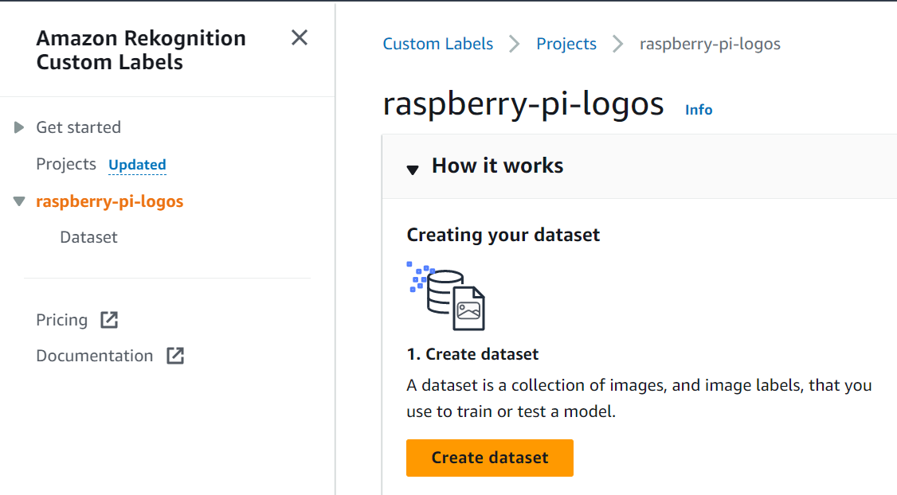
On the next pane, provide the details of the dataset. Under Starting configuration, select Start with a single dataset for Configuation options.

Under Training dataset details, select Import images from S3 bucket for Import images

Next, we will provide the S3 bucket URI s3://2023-04-26-amazon-rekognition-custom-labels/images/ from where it will import the images. Keep the Automatic Labelling checkbox unchecked.

Once S3 URI is given, it will provide some permissions we need to configure on the S3 bucket containing our images. The Custom Labels service cannot import the images from the bucket without these permissions. So let’s configure them.

Copy the provided permissions, go to the S3 bucket, edit the bucket policy and paste the permissions there and save it.
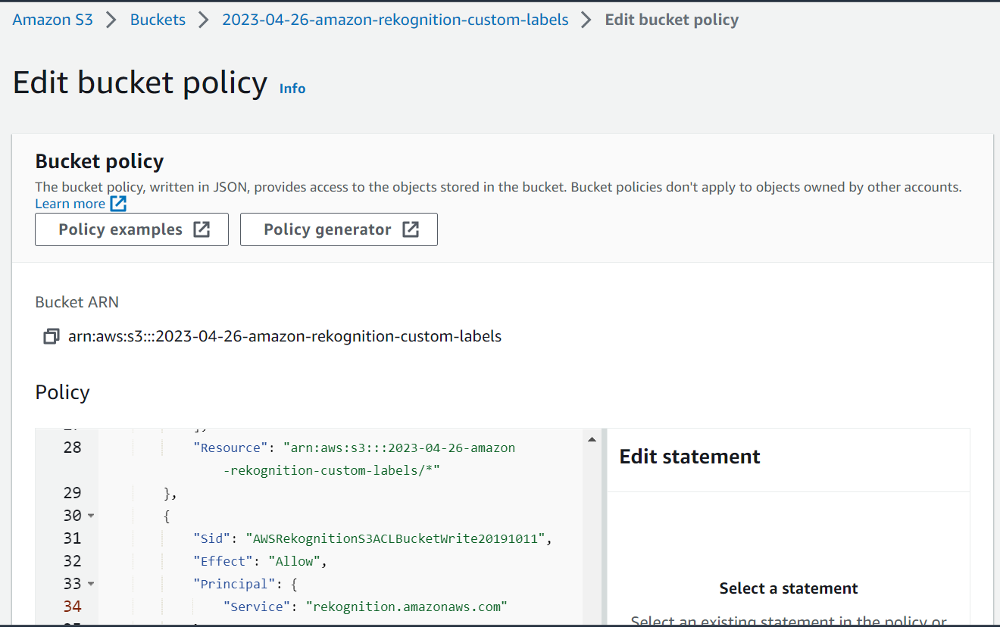
Once all done, go back to the Create Dataset page and click Create Dataset.
Next step is to add labels. For this go to Custom Labels > Projects > raspberry-pi-logos > Add labels
Labels identify objects, scenes, or concepts on an entire image, or they identify object locations on an image.
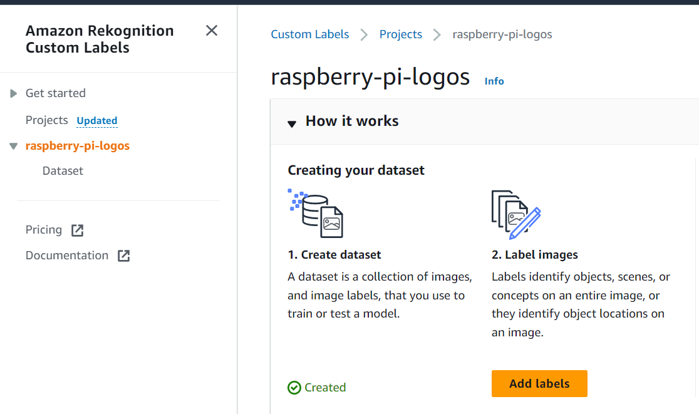
Click the Start Labeling button on the next page to start the labeling activity.
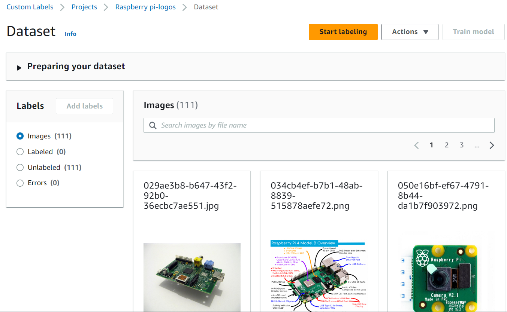
It is easy to label in our case as we only have a single label: Raspberry Pi Logo. Let’s add that label by clicking on Labels > Add Labels. On the Manage labels pane select “Add Labels” and add the name of a single label raspberry-pi-logo, and click Save.

The next step is to draw Bounding Boxes around the Raspberry Pi logos in all the images. This is again a manual step and has to be done very patiently. To start this activity, select unlabelled images and click Draw bounding boxes.

From the next pane, use the cursor to draw bounding boxes around the Raspberry Pi logos, as shown below.
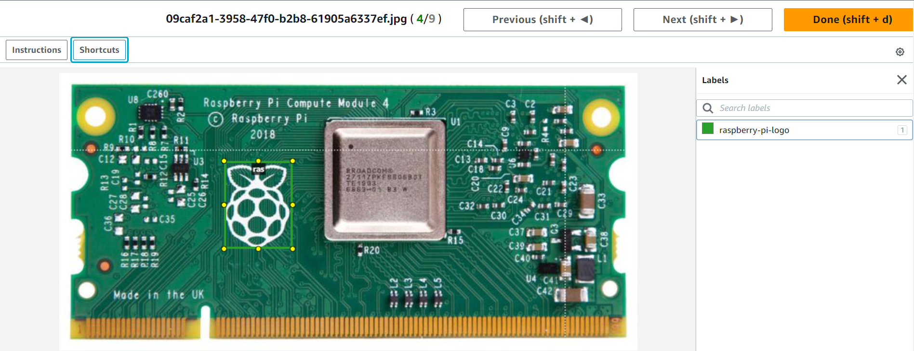
Once completed, click Done and Save changes.
The next step in our process is to train a model. Click Train model to start the model training.

This will open a Train model configuration page. Keep all the defaults on this page, and click Train model. This will bring a popup saying
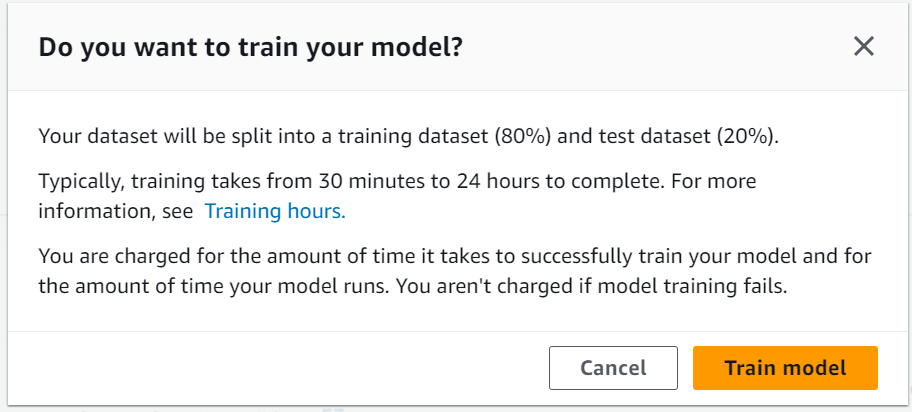
Start the training by clicking Train model.
Once the training starts, a model entry will appear under Custom Labels > Projects > raspberry-pi-logos with the status TRAINING_IN_PROGRESS. After that, we have to wait till the status changes to TRAINING_COMPLETED.
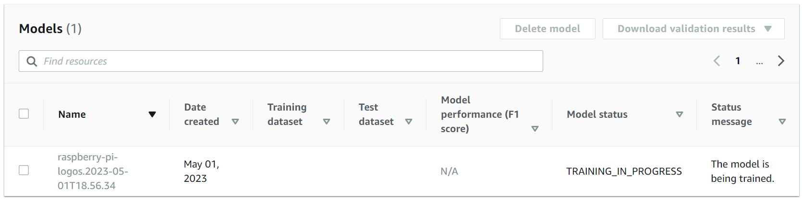
Once the training is complete, we can evaluate the model’s performance by clicking the model name.
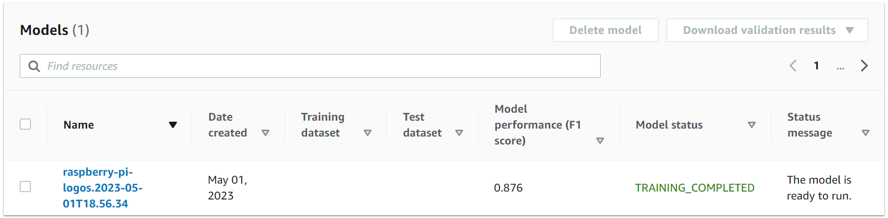
The Evaluation tab shows the testing results for our trained model. This helps to understand the overall performance of our model.
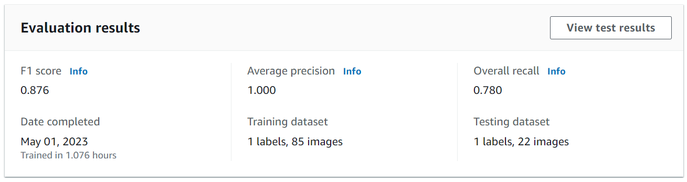
We may dig deeper into the model’s performance on the test set by clicking on the View test results. In our case, the trained model gave wrong predictions (False Negatives) for two test images. When looked closely, it showed that even though the model could pick the presence of the Raspberry Pi logo, it was not confident enough to accurately draw the bounding box around it.
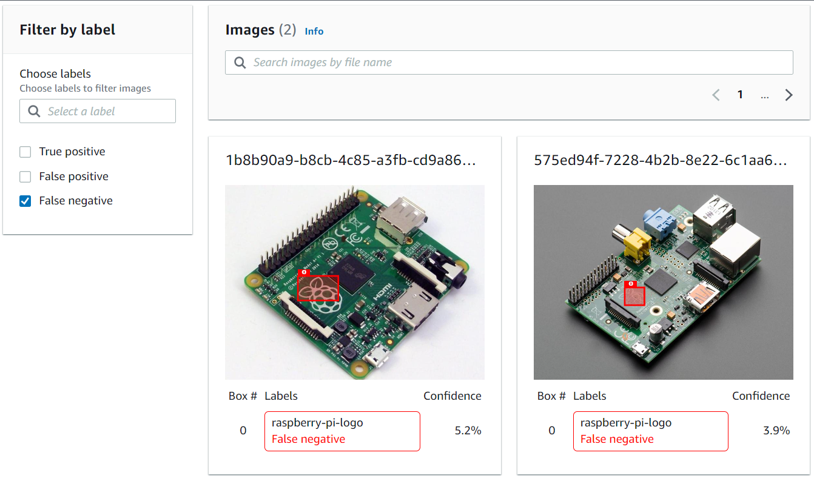
All right, we have trained a model, and we are satisfied with the model’s performance. We may now deploy this model and put it to some actual use. Amazon Rekognition makes the model deployment part a breeze and can be done by clicking the button Start. When you start your model, specify the number of compute resources, known as an inference unit, that the model uses. To read more about the model deployment, compute resources and cost, refer to the documentation page Running a trained Amazon Rekognition Custom Labels model
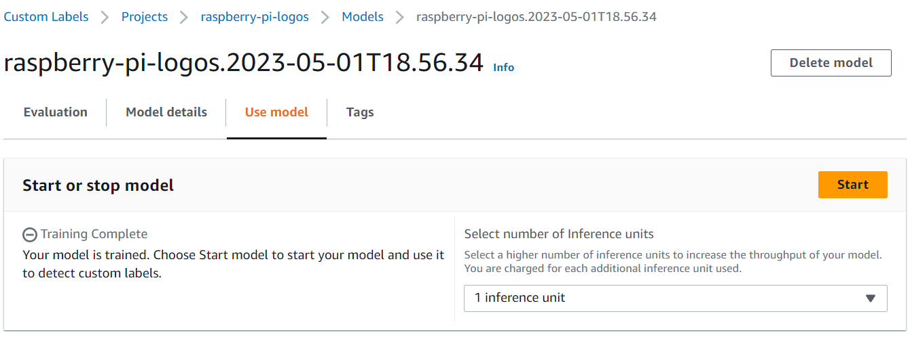
The following cell defines two functions:
display_image This function reads an image from the S3 bucket, and draws a bounding box around the Raspberry Pi logo based on the coordinates received from the model API.
show_custom_labels This function uses the Boto3 library to initiate Amazon Rekognition service client, and invoke its APIs. For custom label detection, it uses the interface detect_custom_labels. To read more about this API and the available features, refer to the documentation page Rekognition.Client.detect_custom_labels
import boto3
import io
from PIL import Image, ImageDraw, ExifTags, ImageColor, ImageFont
def display_image(bucket,photo,response):
# Load image from S3 bucket
s3_connection = boto3.resource('s3')
s3_object = s3_connection.Object(bucket,photo)
s3_response = s3_object.get()
stream = io.BytesIO(s3_response['Body'].read())
image=Image.open(stream)
# Ready image to draw bounding boxes on it.
imgWidth, imgHeight = image.size
draw = ImageDraw.Draw(image)
# calculate and display bounding boxes for each detected custom label
print('Detected custom labels for ' + photo)
for customLabel in response['CustomLabels']:
print('Label ' + str(customLabel['Name']))
print('Confidence ' + str(customLabel['Confidence']))
if 'Geometry' in customLabel:
box = customLabel['Geometry']['BoundingBox']
left = imgWidth * box['Left']
top = imgHeight * box['Top']
width = imgWidth * box['Width']
height = imgHeight * box['Height']
draw.text((left,top), customLabel['Name'], fill='#00d400')
print('Left: ' + '{0:.0f}'.format(left))
print('Top: ' + '{0:.0f}'.format(top))
print('Label Width: ' + "{0:.0f}".format(width))
print('Label Height: ' + "{0:.0f}".format(height))
points = (
(left,top),
(left + width, top),
(left + width, top + height),
(left , top + height),
(left, top))
draw.line(points, fill='#00d400', width=5)
return image
def show_custom_labels(model,bucket,photo, min_confidence):
client=boto3.client('rekognition')
#Call DetectCustomLabels
response = client.detect_custom_labels(Image={'S3Object': {'Bucket': bucket, 'Name': photo}},
MinConfidence=min_confidence,
ProjectVersionArn=model)
print("Response from the API: \n", response, "\n")
# For object detection use case, uncomment below code to display image.
image_with_labels = display_image(bucket,photo,response)
return image_with_labelsbucket='2023-04-26-amazon-rekognition-custom-labels'
photo='images/029ae3b8-b647-43f2-92b0-36ecbc7ae551.jpg'
model='arn:aws:rekognition:us-east-2:801598032724:project/raspberry-pi-logos/version/raspberry-pi-logos.2023-05-01T18.56.34/1682949462653'
min_confidence=20
image_with_labels=show_custom_labels(model,bucket,photo, min_confidence)Response from the API:
{'CustomLabels': [{'Name': 'raspberry-pi-logo', 'Confidence': 21.43899917602539, 'Geometry': {'BoundingBox': {'Width': 0.08699999749660492, 'Height': 0.0675399973988533, 'Left': 0.34002000093460083, 'Top': 0.30324000120162964}}}], 'ResponseMetadata': {'RequestId': '45c1b1cd-162f-4ebf-8603-957648440d41', 'HTTPStatusCode': 200, 'HTTPHeaders': {'x-amzn-requestid': '45c1b1cd-162f-4ebf-8603-957648440d41', 'content-type': 'application/x-amz-json-1.1', 'content-length': '216', 'date': 'Tue, 02 May 2023 14:30:22 GMT'}, 'RetryAttempts': 0}}
Detected custom labels for images/029ae3b8-b647-43f2-92b0-36ecbc7ae551.jpg
Label raspberry-pi-logo
Confidence 21.43899917602539
Left: 272
Top: 182
Label Width: 70
Label Height: 41Rekognition Custom Labels service will charge us as long as the model is in the Running state. Therefore, we should stop it once it in no more being used. To do that, click the Stop button on the model.
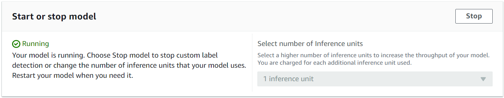